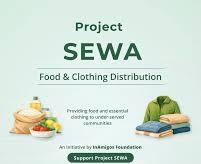

Community SupportProject SEVA
Flagship initiative dedicated to reducing hunger and clothing deprivation among underprivileged communities through food distribution, dry ration support, and clothing drives.
50,000+ Meals
Multiple Cities
Learn More